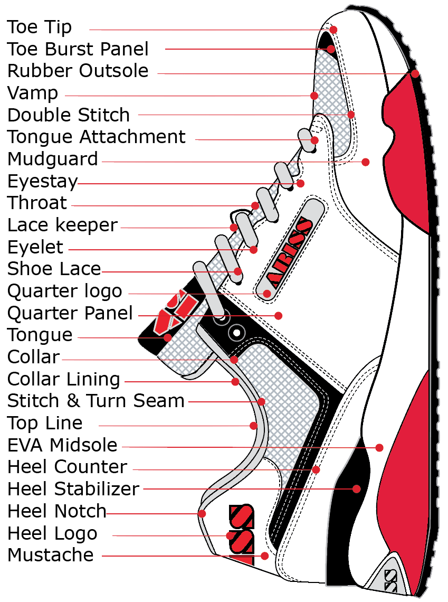

¿COMO HACEMOS NUESTROS TENIS?
Proceso de montado frio:
En el proceso de montado en frío, el corte superior del zapato se puede preparar con el strobel inferior; ya que en este estilo de sneaker tan común, la suela exterior cubre el borde del cosido strobel, por lo que la plantilla puede utilizarse para hacer una zapatilla más ligera y flexible.
Después, se le agrega vapor al corte superior para ablandar los materiales y se inserta la horma dentro de la zapatilla. Una vez que la horma está bien ajustada dentro del corte de la sneaker, una segunda máquina aplica presión en el borde del talón. Una vez que la horma haya sido colocada dentro de la zapatilla, y se hayan ajustado bien fuerte al diseño unos cordones temporales, el corte exterior de la zapatilla se enfría para hacer que los componentes se contraigan y queden aun más ajustados a la forma de la horma.
En este paso, la zapatilla puede tener una pieza de plástico o de tela colocada en la parte superior de la lengüeta para proteger la superficie de posibles daños o roces durante las operaciones de unión.
Halogenado & Pegado:
Ahora que el corte superior está ajustado firmemente a la horma, y la suela está terminada, ambas piezas se ensamblan. Antes de juntar las dos piezas, la suela recibe una capa de imprimación especial, y una capa de pegamento, conocido también como cemento. La suela, también recibirá su imprimación especial diseñada para los materiales de EVA y goma; al igual que el corte superior de la zapatilla, que también se prepara con su propia imprimación teniendo en cuenta el material del que esté compuesto, para finalmente aplicar el cemento.
Presion, Frio & Deshormado
La zapatilla tiene 3 operaciones de presión diferentes, y por lo general se realiza todo con una sola máquina. Se prensa por la parte superior a la vez que se presiona también la puntera, los laterales, y el talón.
Después pasar por túnel de frío, se utiliza una máquina para empujar la horma fuera de la zapatilla, y así evitar cualquier arruga en la parte superior del modelo ya terminado.
Ahora que la deportiva está completa, es el momento de insertar la plantilla;
La plantilla plana previamente cortada, generalmente se pega en el interior del modelo, mientras que las plantillas moldeadas van sin pegar, con lo cual, van colocadas en el interior.
Finalmente, la nueva zapatilla deportiva se encuentra lista para la inspección de control de calidad; un vistazo rápido para detectar cualquier hilo suelto, temas relacionados con la limpieza final del producto, y posibles problemas de embalaje.